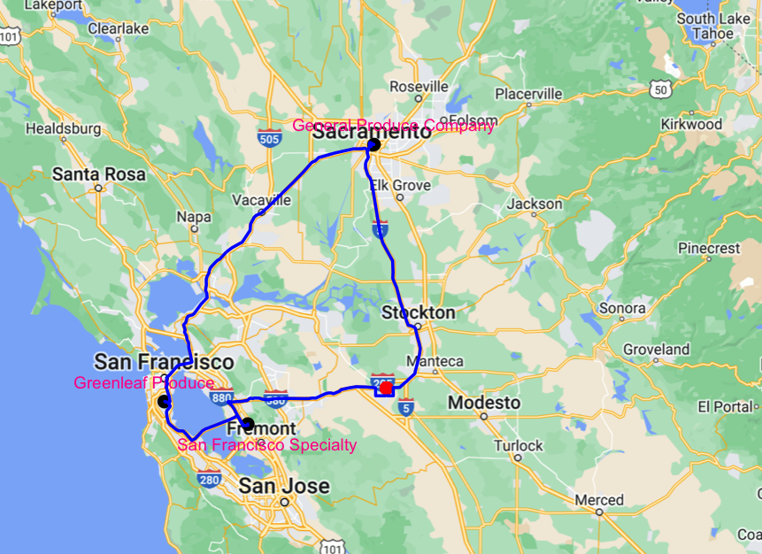
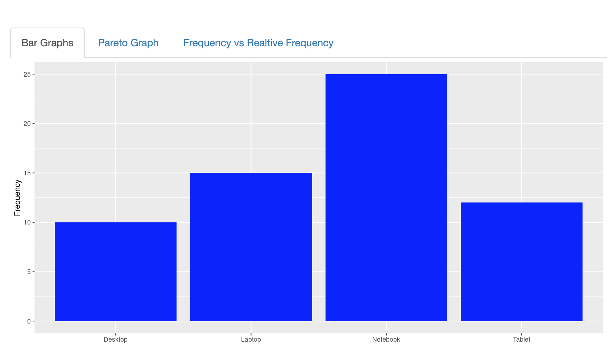
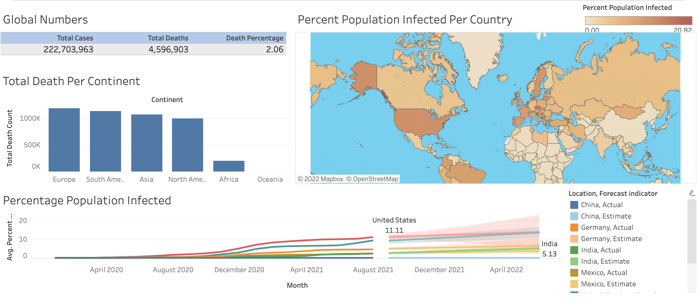

Yanru Chen
Data Analyst + Graph Enthusiam
I am interested in learning all kinds of technologies in data science and computer sicence. My current job is a data analyst. I use my knowledge in R to make meaningful graphs.
As a side hobby, I write blogs for math learning tips pathofmathematics
Featured Projects
View selected projects below. Code of the projects can be found at my Github.
Route Design with Google API
Use Google API to optimize the delivery route. This project help improve the efficieny of delivery and reduce costs on gasline as well as labor cost.
More InfoInteractive Bar Chart
After learning how to make a shinyApp, I am inspired to make an interactive app. As an instructor I know students like hands-on activities. This project is designed for instructors who wants to apply active learning and make the class fun.
More Info Try the APP!Covid Data Analysis with SQL
After learning SQL I wanted to try analyse Covid data. I also create a Tableau Dashboard to demonstrate the result.
More Info View DashboardWork Experience
See my complete work history on LinkedIn.
Data Analyst
Feb 2020 - Present
Provide weekly financial reports. Improve the exciting code and projects. Provide ad hoc reports for the management team and other departments
Research Assitant
Jan 2020 - Dec 2021
During my master program I work together with a professor on two projects:
- Active learning experience for students in CSU East Bay.
- Research on how Fourier Transform can be used to solve questions in various spacetimes.
Instructor & Curriculum Developer
Jan 2020 - Dec 2021
Instructor for algebra classes. Prepare students from various background for Calculus classes.
Key contributions:
- I have taught undergraduate students Algebra, Business Calculus as well as study skills.
- Work together with other master students and Professors to make curriculum for Algebra classes. Use Latex to make the textbook.
Education
CSU East Bay - Hayward, CA
Master in Mathematics, 2021
Ranjit Singh Sabharwal Scholarship